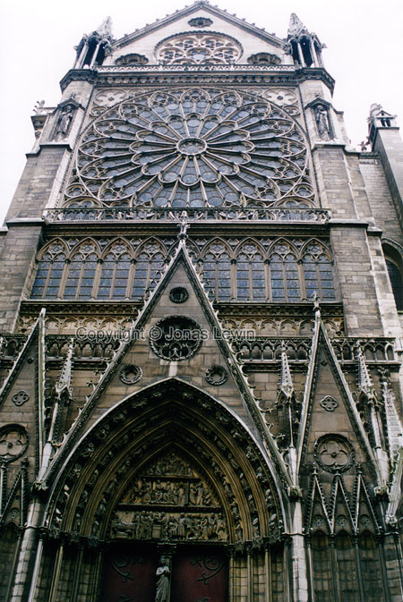
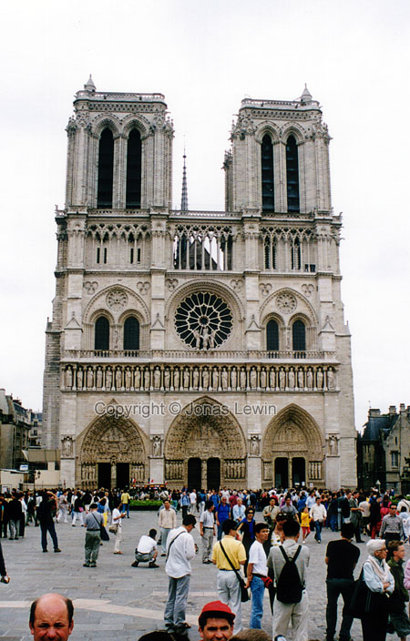
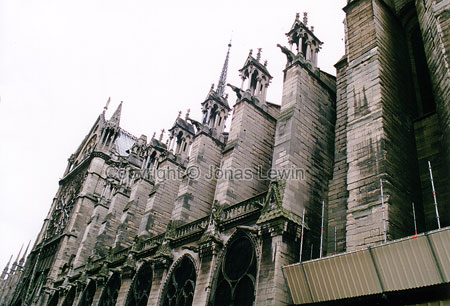
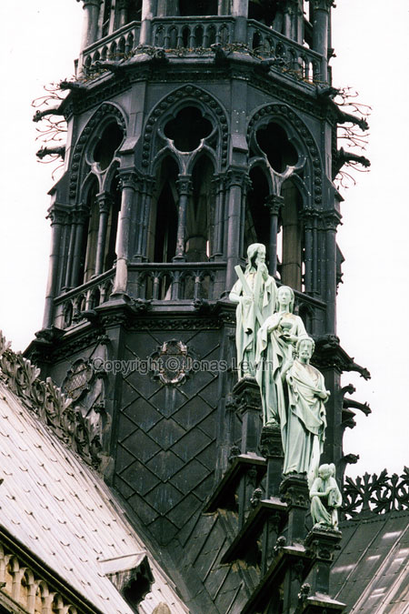
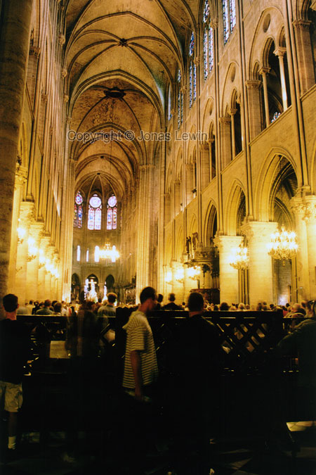

France, Paris, 2001-05.
|
Notre Dame says.... welcome?    I was looking for the hunchback of Notre Dame, "Quasimodo", here, but I couldn't find him anywhere. My guess is that I'm too late to find him. Notre Dame is an impressive church and very high. |